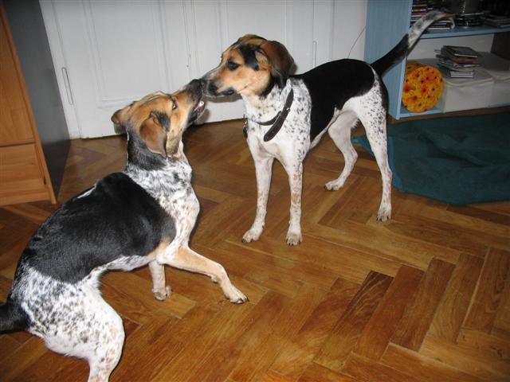
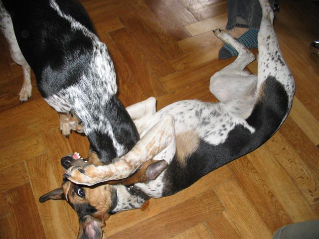
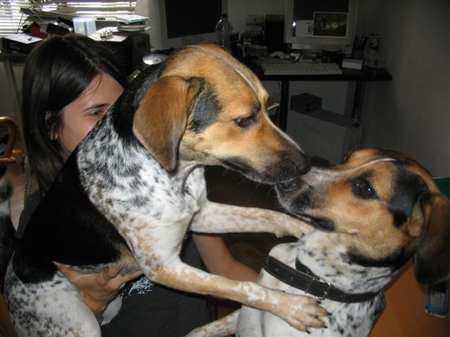
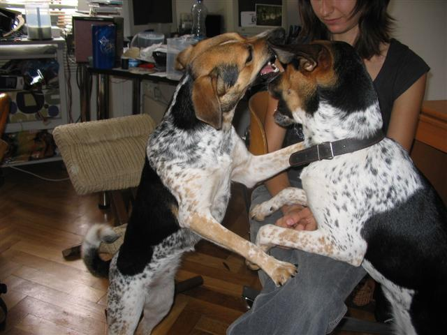
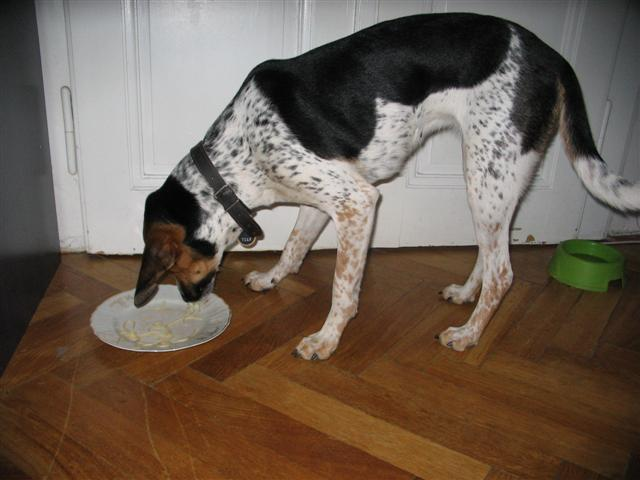
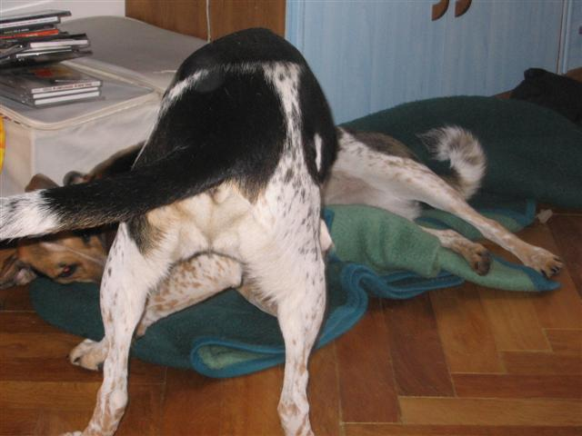

Navigace |
Strakaté duo: Jaga na návštěvěI studijní důvody mohou býti záminkou k strakatému setkání... S Hankou jsme spojily užitečné s příjemným, takže dorazila nejen s daty na flashce, ale i s Jagou. Stračeny se tedy proběhly, pohrály si, nakrmily se špagetami a usnuly poblíž, aby kontrolovaly, jestli se u kompu neflákáme.  S tlapkami ve vzduchu Nela, mírně skeptický výraz vpravo Jaga. Nela se teda většinu času chovala jako otravný mladší sourozenec, který do omrzení volá "Pojď si hrát, pojď si hrát, pojď si hrát..." Navzdory tomu, že je o víc jak půl rok starší, tak neustále hopskala kolem Jagy a vyzývala jí ke hře. Jaga, která momentálně prodělává falešnou březost par excellence, neměla na takové návrhy zrovna náladu a tvářila se vážně, což opravdu umí. Nakonec se však přece jen nechala vyprovokovat k pořádné honičce po Stromovce a doma nakonec i k pořádnému hraní, okusování za krk a válení po zemi.  Jaga na zemi, Nela nad ní - abychom Jaze nekřivdili, Neliny zuby jsou taky vystrčené, jen nejsou vidět. Zkrátka the point of view is the determinant factor.  Co udělá Nela, pokud je sice starší, ale o hlavu menší (aspoň při srovnání postoje na zadních nožičkách), aby zvýšila svoje šance na vítězství? Nejprve se vyškrábe na paničku protivníka, aby získala komparativní výhodu a pak jej odpackovává dolů...
 Jenže někdy se nepodaří udržet pozice a situace se promění. Jaga ovšem v rámci fair play nevylezla paničce na klín, jen se jí opírá přes nohy. A pak přišly na řadu taky špagety. Teda chronologicky správně to bylo hraní - špagety - hraní (ano, ke k hodinovému klidu po krmení to mělo dost daleko).  Bohužel, než se mi podařilo oživit foťák , špagety byly téměř pozřeny...A ještě abych nezapomněla, ke konci psích hrátek Nela začala být unavená a Jaga tak měla chvíli navrch. Což nás vždy potěší, když někdo dostane Nelu na lopatky.
 Aspoň nějaká dokumentace této události. Setkání bylo plodné, nejen že jsme vytvořily množství statistických tabulek, probraly závěrečné práce, členy a členky kateder a institutů, otvírací doby knihoven atd. Ale rovněž jsme objevily dvě nové podoby českého strakatého psa: českého stíhacího a českého špagetového psa!
|